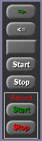
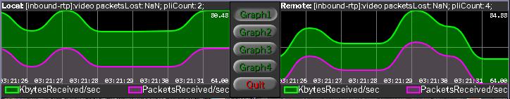
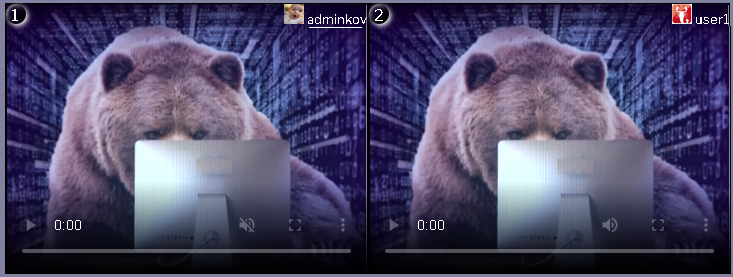

Инструкция по использованию плагина видео-чата WP-WebRTC2
Графический интерфейс плагина
Общий вид плагина видео-чата представлен ниже в виде 7 графических областей:

1. Баннер плагина:

В середине баннера – пентаграмма из иконок браузеров, с которыми данный плагин работает: Google Chrome, Fire Fox, Edge, Opera, Yandex.
2. Окно зарегистрированных посетителей сайта:

Это список всех зарегистрированных посетителей сайта.
В поле “Status” – цвет лампочки означает:

3. Окно управления плагином:

пригласить собеседника в видео-чат
исключить собеседника из видео-чата
таймер обратного отсчета
начать видео-чат
закончить видео-чат
начать запись видео-чата
закончить запись видео-чата
примечание: после нажатия кнопки Start записи видео-чата приглашенный собеседник получит сообщение о том, что ведется запись видеосвязи его собеседником.В процессе записи видео-чата происходит:
1. Запись адио-потока и видео-потока двух собеседников видео-чата.
2. Запись текстовых сообщений двух собеседников видео-чата.
3. Запись процесса рисования на доске рисования двух собеседников видео-чата.
4. После нажатия кнопки Stop (завершить запись видеочата) пользователю будет предложено сохранить результат записи видеочата в формате .webm на локальный диск.
4. Окно со списком двух участников видео-чата:

В первой строке таблицы - хозяин комнаты переговоров, приглашающий собеседника. Если кликнуть по его имени, то попадете в его Profile. Кнопка "Выберите файл" служит для выбора файла и передачи его собеседнику. Выберите файл и нажмите кнопку Send. Появится progress-bar на время передачи файла собеседнику. Поле "message" - введите туда сообщение и нажмите кнопку Send.
5. Совмещенное окно для вывода текущих сообщений:

кнопка "Chat" - режим отображения сообщений автоответчика, участников видео-чата.

кнопка "Clear" - очистка выбранного окна сообщений.
кнопка "Report" - сохраняет текстовые сообщения автоответчика и участников видео-чата или протокол установления связи - во внешний файл в формате HTML.

кнопка "Graph" - графики, отображающие текущее состояние видео-чата.6,7 Два окна для вывода видео и аудио потоков двух участников видео-чата:

Первое окно видео-потока - хозяина комнаты переговоров. Кликнув по его имени, вы попадете в его Profile. В левом верхнем углу каждого окна видео-потока расположен номер окна. Нажав на него можно увеличить размер окна с отображением режима "картинка в картинке". Повторное нажатие приведет окно в начальное положение.
При подведении курсора мыши к номеру окна выпадает меню – переход в режим отображения экрана компьютера или наоборот – включение веб-камеры.
Управление интерфейсом разработано таким образом, что кнопки, имеющие надписи белого цвета будут недоступны. Заложенная логика поведения плагина изменяет цвет надписей кнопок на зеленый или красный и будут доступны в случае целесообразности. Это позволяет избежать аварийных ситуаций при некорректном управлении плагина пользователем. (важно отметить: администратор сайта не участвует в видео-чате в целях безопасности, в целях недопущения показа его логина всем остальным посетителям сайта).
 Участник видеочата может увеличить свое окно или окно собеседника, нажав на кружок (1) или (2) с отображением режима «картинка в картинке». Повторное нажатие возвращает окно в исходное положение.
Участник видеочата может увеличить свое окно или окно собеседника, нажав на кружок (1) или (2) с отображением режима «картинка в картинке». Повторное нажатие возвращает окно в исходное положение.
 При наведении курсора мыши на кружок (1) появляется выпадающее меню из двух пунктов: screen(или- webcam) и board(или- no board)
При наведении курсора мыши на кружок (1) появляется выпадающее меню из двух пунктов: screen(или- webcam) и board(или- no board)
- screen/webcam - переключает экран собеседника в режим совместного использования вашего экрана или переключения на веб-камеру.
- board/no doard - включает или выключает режим интерактивной доски для рисования.
8 Profile зарегистрированного пользователя:

В профайл пользователя добавлен пункт - Users for Video chat. В случае большого количества зарегистрированных пользователей сайта, в этом пункте для удобства, пользователь может создать свой Contact List для видеочата.

В профайл пользователя добавлен пункт - Email:
1. Отправлять сообщения автоответчика видеочата на мою электронную почту
2. Отправлять текстовые сообщения сеанса видеочата на мою электронную почту
Порядок установления видео-связи
1. Зайдите на страницу сайта под своим логином, где установлен шорт-код [webrtc2]
2. В окне зарегистрированных посетителей сайта выберите галочкой пользователя, с которым вы хотите установить видео-связь и нажмите кнопку => (пригласить собеседника в видео-чат).
2.1 Если лампочка выбранного пользователя окрашена голубым цветом, это означает, что в данный момент пользователь отсутствует. В этом случае, вы можете только оставить ему сообщение на автоответчик, введя сообщение в поле message и нажав кнопку Send.
2.2 Если лампочка выбранного пользователя окрашена желтым цветом, это означает, что пользователь присутствует и он получить звуковой сигнал вызова. Чтобы узнать - кто вызывает - этот пользователь может подвести курсор мыши к лампочке зеленого цвета в окне зарегистрированных посетителей сайта.
2.3 Если вызываемый вами пользователь согласен ответить на ваш вызов, он отметит галочкой ваш логин и нажмет кнопку => (пригласить собеседника в видео-чат). Через несколько секунд - оба участника видео-связи получат звуковой сигнал Hello и заморгает зеленая кнопка Start. Оба участника видео-связи нажимают кнопку Start и пойдет процесс установления видео-связи. (~ 10 сек).
2.4 Если вызываемый вами пользователь не согласен ответить на ваш вызов, то через 60 сек. ваш вызов будет автоматически отменен.
3. В процессе видео-связи вы можете:
3.1 Обмениваться текстовыми сообщениями.
3.2 Посылать друг другу файлы.
3.3 Предоставлять друг другу свой экран для просмотра.
3.4 Пользоваться интерактивной доской для рисования.